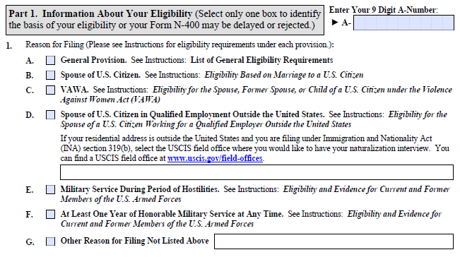
Parte 1. Información Acerca de Su Elegibilidad (Marque solo una casilla para identificar la base de su elegibilidad o su Formulario N-400 podría demorarse o ser rechazado.)
Escriba los 9 Dígitos de su Número A:
► A-
Si su dirección de residencia está fuera de los Estados Unidos y está presentando su solicitud bajo la sección 319(b) de la Ley de Inmigración y Nacionalidad (INA), seleccione la oficina de campo de USCIS donde desea tener su entrevista de naturalización. Puede encontrar una oficina de campo de USCIS en www.uscis.gov/field-offices.
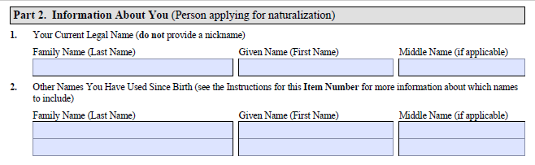
Parte 2. Información Acerca de Usted (Persona que solicita la naturalización)
Apellido Nombre Segundo Nombre (si aplica)
Apellido Nombre Segundo Nombre (si aplica)
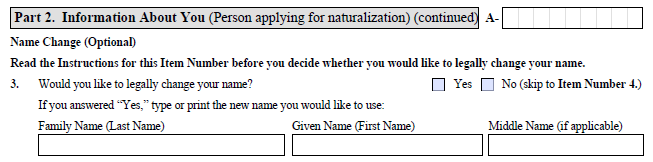
Parte 2. Información Acerca de Usted (Persona que solicita la naturalización) (continúa) A-
Cambio de Nombre (Opcional)
Lea las Instrucciones para este Número de Artículo antes de decidir si desea cambiar su nombre legalmente.
Si respondió "Sí," escriba a máquina o en letra de imprenta el nuevo nombre que le gustaría usar:
Apellido Nombre Segundo Nombre (si aplica)
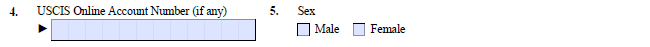
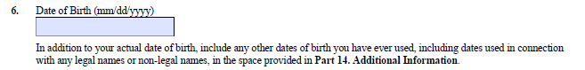
Además de su fecha de nacimiento real, incluya cualquier otra fecha de nacimiento que haya utilizado alguna vez, incluyendo fechas utilizadas en relación con cualquier nombre legal o no legal, en el espacio provisto en Parte 14. Información Adicional.
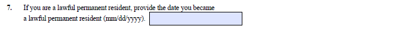
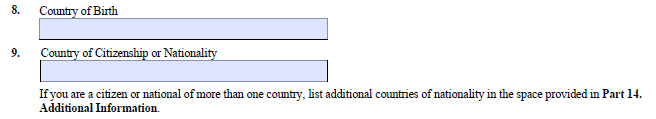
Si usted es ciudadano o nacional de más de un país, indique los países adicionales de nacionalidad en el espacio provisto en Parte 14. Información Adicional.
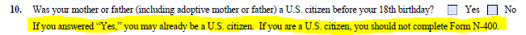
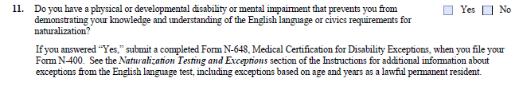
Si respondió "Sí," presente un Formulario N-648, Medical Certification for Disability Exceptions, completo cuando entregue su Formulario N-400. Consulte la sección Exámenes de Naturalización y Excepciones de las Instrucciones para obtener información adicional sobre las excepciones al examen de idioma inglés, incluyendo excepciones basadas en edad y años como Residente Permanente Legal.
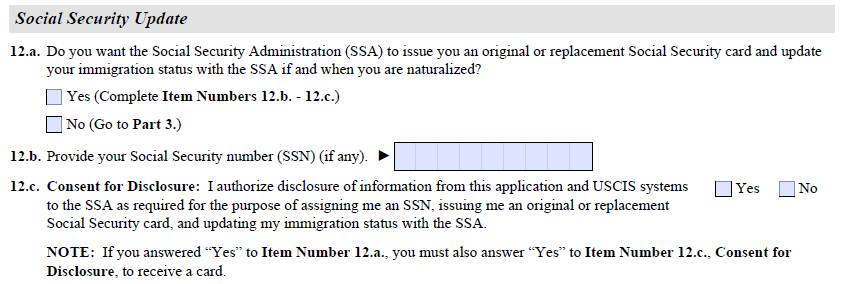
Actualización del Seguro Social
12.a. ¿Desea que la Administración del Seguro Social (SSA, por sus siglas en inglés) le emita una tarjeta de Seguro Social original o de reemplazo y actualice su estatus migratorio con la SSA si es naturalizado(a)?
Sí (Complete los Números de Artículo 12.b. - 12.c.)
No (Pase a la Parte 3.)
12.b. Indique su número de Seguro Social (NSS) (si alguno). ►
12.c. Consentimiento para la Divulgación: Autorizo la divulgación de información de esta solicitud y de los sistemas de USCIS a la SSA según sea necesario para asignarme un NSS, emitirme una tarjeta de Seguro Social original o de reemplazo, y actualizar mi estatus migratorio con la SSA. Sí No
NOTA: Si respondió "Sí" al Número de Artículo 12.a., también debe responder "Sí" al Número de Artículo 12.c., Consentimiento para la Divulgación, para recibir una tarjeta.
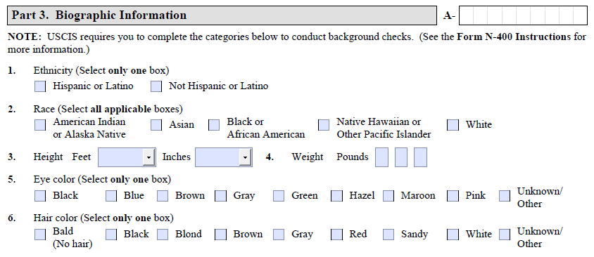
Parte 3. Información Biográfica A-
NOTA: USCIS requiere que usted complete las categorías que aparecen a continuación para realizar verificaciones de antecedentes. (Consulte las Instrucciones del Formulario N-400 para obtener más información.)
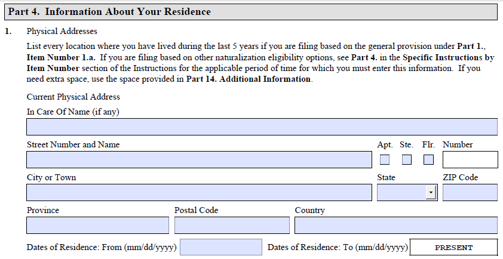
Parte 4. Información Acerca de Su Residencia
Liste todos los lugares donde haya vivido durante los últimos 5 años si está presentando la solicitud conforme a la disposición general del Parte 1., Número de Artículo 1.a. Si está presentando la solicitud conforme a otras opciones de elegibilidad para la naturalización, consulte Parte 4. en la sección Instrucciones Específicas por Número de Artículo de las Instrucciones para el período de tiempo aplicable sobre el cual debe ingresar esta información. Si necesita espacio adicional, utilice el espacio provisto en Parte 14. Información Adicional.
Domicilio Físico Actual
Nombre del destinatario (si alguno)
Número y Nombre de Calle Apt. Ste. Flr. Número
Ciudad o Pueblo Estado Código Postal
Provincia Código Postal País
Fechas de Residencia: Desde (mm/dd/aaaa) Fechas de Residencia: Hasta (mm/dd/aaaa) PRESENTE
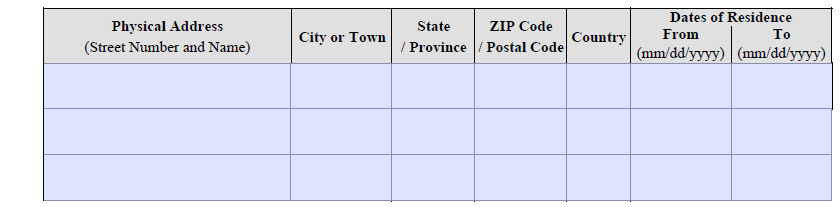
| Domicilio Físico (Número y Nombre de Calle) |
Ciudad o Pueblo | Estado / Provincia | Código Postal | País | Fechas de Residencia Desde (mm/dd/aaaa) |
Hasta (mm/dd/aaaa) |
|---|---|---|---|---|---|---|
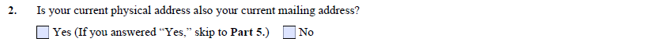
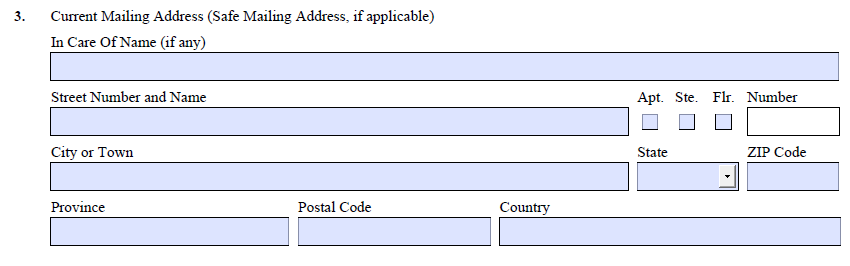
Nombre del destinatario (si alguno)
Número y Nombre de Calle Apt. Ste. Flr. Número
Ciudad o Pueblo Estado Código Postal
Provincia Código Postal País
This note is NOT part of the USCIS form N-400, is NOT official USCIS information and is NOT legal advice.
Esta nota NO forma parte del formulario N-400 de USCIS, NO es información oficial de USCIS y NO constituye consejo legal.
What is my marital status if my relationship was never registered?
The N-400 asks about your legal marital status: Single, Married, Divorced, Widowed, Separated, or Annulled.
These refer to your legal status — not just whether you live with a partner.
In some countries, a long-term live-in relationship (without a formal wedding) can be recognized by law as a marriage,
even without official registration. If your relationship was never registered, check whether the laws of your home country
treat it as a legal union. If they do, USCIS may consider it a marriage.
When in doubt, consult an immigration attorney or accredited representative.
¿Cuál es mi estado civil si mi relación nunca fue registrada?
El formulario N-400 pregunta sobre su estado civil legal: Soltero(a), Casado(a), Divorciado(a), Viudo(a),
Separado(a) o Matrimonio Anulado. Estos términos se refieren a su situación legal, no simplemente a
si usted vive con una pareja. En algunos países, una convivencia estable y duradera (sin boda formal) puede
ser reconocida por la ley como matrimonio, aunque no haya sido registrada oficialmente. Si su relación nunca fue registrada,
verifique si las leyes de su país de origen la reconocen como una unión legal. De ser así, el USCIS podría considerarla
un matrimonio. En caso de duda, consulte a un abogado de inmigración o a un representante acreditado.
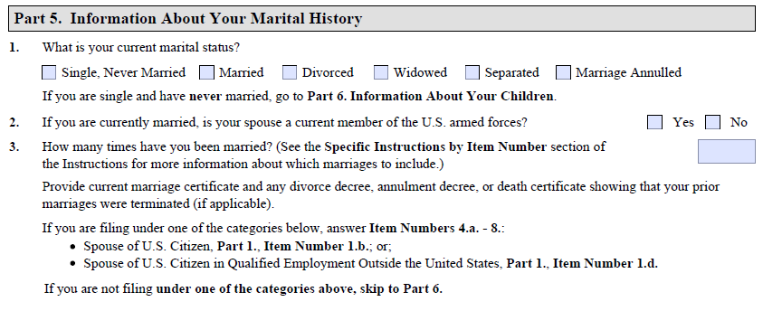
Parte 5. Información Acerca de Su Historial Matrimonial
Presente el acta de matrimonio actual y cualquier decreto de divorcio, decreto de anulación o certificado de defunción que demuestre que sus matrimonios anteriores fueron disueltos (si aplica).
Si está presentando su solicitud bajo una de las categorías indicadas a continuación, responda los Números de Artículo 4.a. - 8.:
Si no está presentando su solicitud bajo una de las categorías anteriores, pase a la Parte 6.
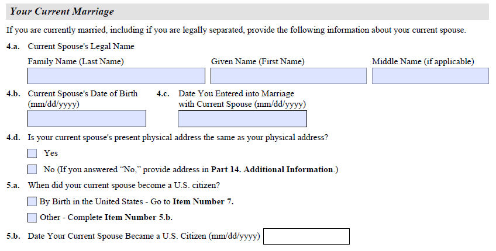
Su Matrimonio Actual
Si actualmente está casado(a), incluyendo si está legalmente separado(a), provea la siguiente información sobre su cónyuge actual.
4.a. Nombre Legal de Su Cónyuge Actual
Apellido Nombre Segundo Nombre (si aplica)
4.b. Fecha de Nacimiento de Su Cónyuge Actual (mm/dd/aaaa) 4.c. Fecha en Que Contrajo Matrimonio con Su Cónyuge Actual (mm/dd/aaaa)
4.d. ¿Es el domicilio físico actual de su cónyuge el mismo que el suyo?
Sí
No (Si respondió "No," provea la dirección en Parte 14. Información Adicional.)
5.a. ¿Cuándo se hizo ciudadano(a) de los EE.UU. su cónyuge actual?
Por nacimiento en los Estados Unidos — Pase al Número de Artículo 7.
Otro — Complete el Número de Artículo 5.b.
5.b. Fecha en Que Su Cónyuge Actual se Hizo Ciudadano(a) de los EE.UU. (mm/dd/aaaa)
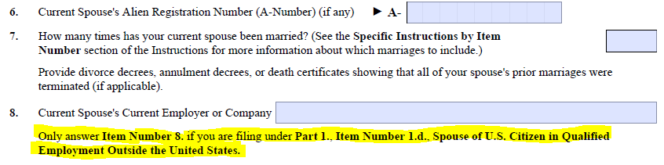
Presente los decretos de divorcio, decretos de anulación o certificados de defunción que demuestren que todos los matrimonios anteriores de su cónyuge fueron disueltos (si aplica).
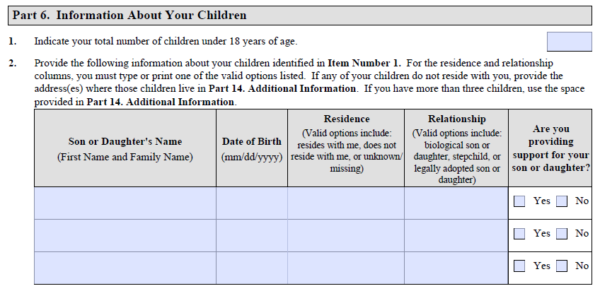
Parte 6. Información Acerca de Sus Hijos
| Nombre del Hijo(a) (Nombre y Apellido) |
Fecha de Nacimiento (mm/dd/aaaa) |
Residencia (Las opciones válidas incluyen: vive conmigo, no vive conmigo, o desconocido/desaparecido) |
Relación (Las opciones válidas incluyen: hijo(a) biológico(a), hijastro(a), o hijo(a) adoptado(a) legalmente) |
¿Provee usted manutención a su hijo(a)? |
|---|---|---|---|---|
| Sí No | ||||
| Sí No | ||||
| Sí No |
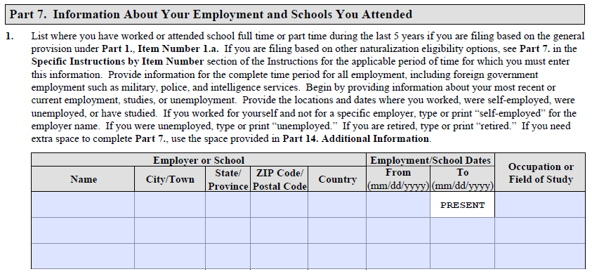
Parte 7. Información Acerca de Su Empleo y de las Escuelas a las Cuales Asistió
| Empleador o Escuela | Fechas de Empleo/Estudios | Ocupación o Área de Estudio | |||||
|---|---|---|---|---|---|---|---|
| Nombre | Ciudad/Pueblo | Estado/ Provincia |
Código Postal | País | Desde (mm/dd/aaaa) |
Hasta (mm/dd/aaaa) |
|
| PRESENTE | |||||||
Gracias al contribudor voluntario para las traducciones de ejemplo de los formularios del USCIS que guiaron el trabajo en estas páginas.